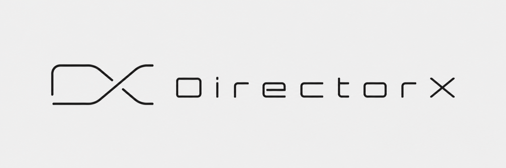
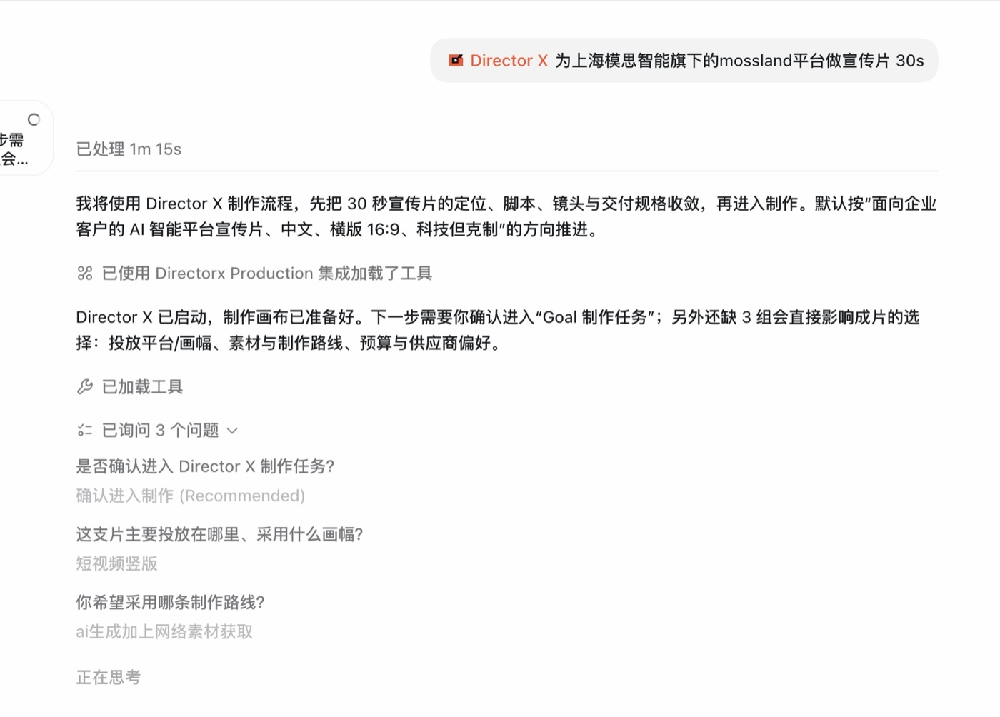
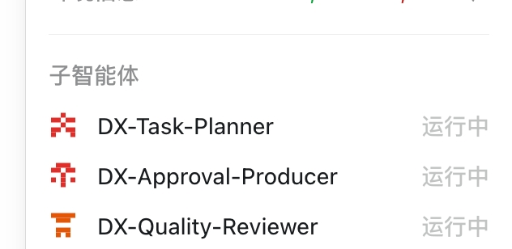
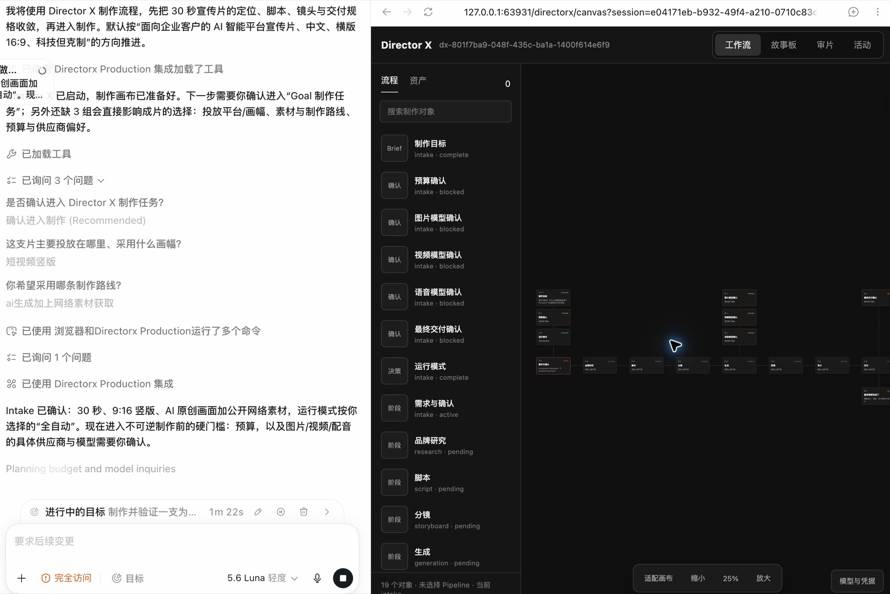

Persistent intent
Objectives, approvals, checkpoints, and recovery remain bound to one production Run.
Open source / Codex plugin / Early access

Director X turns a native Codex Goal into a persistent video production Run—coordinated by dedicated agents, reflected live on a media-first canvas, and carried through to reviewed output.
The Goal remains open until the requested media exists, has been reviewed, and is ready for delivery. Planning is evidence—not completion.

Specialist production roles own explicit artifacts, permissions, and handoffs. Independent work can run concurrently without becoming anonymous.

References, scripts, images, audio, shots, cuts, approvals, and review evidence appear as they are created. Their relationships stay visible throughout the Run.

A live map of what exists, where it came from, and what it becomes next.
Objectives, approvals, checkpoints, and recovery remain bound to one production Run.
Each DX agent owns concrete artifacts and hands them to the next production role.
Generated and acquired files become previewable nodes with visible lineage and review state.
Two 60-second WAIC × MOSS promotional films produced through a Director X 0-Key route. Playback is user-controlled; production evidence stays visible.
Install from the mosi marketplace, fully restart Codex, then start a new task with @directorx.
codex plugin marketplace add https://github.com/LaplaceYoung/director-x.git --ref main
codex plugin add directorx@mosi
codex plugin listDirector X is expanding from a Codex-native proving ground into a complete video-production runtime and desktop environment.
A video-native production runtime adapting the Pi Agent Harness model for persistent execution, provider routing, media memory, editing, review, and delivery.
An Electron workspace for local projects, media, providers, canvas workflows, review, rendering, and final delivery.
Persistent state. Explicit approvals. Reviewable media.
In development / Video Agent Harness
A dedicated Video Agent Harness, adapted from Pi Harness, for video work that needs memory, rhythm, continuity, and a real path from intent to final frame.
Scenes, assets, voices, camera grammar, and review evidence stay available across a long production.
Specialist agents reason over time, frames, transitions, and handoffs instead of isolated prompts.
The harness turns one creative direction into a coherent production environment where every decision can become a frame.